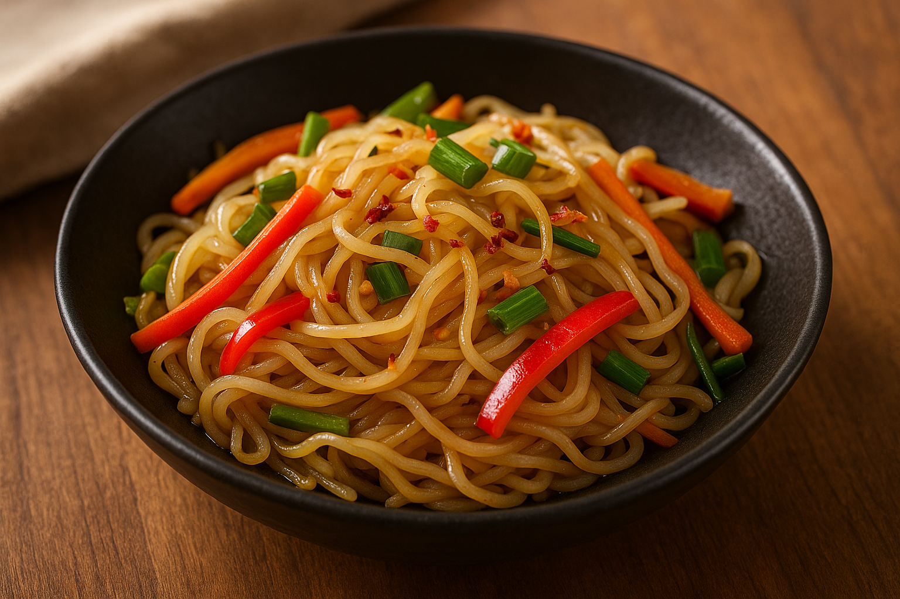

Enjoy a guilt-free noodle fix with this easy, low-carb Shirataki stir-fry recipe made with Yamaki konjac noodles. It’s light, flavorful, and perfect for weight loss, keto, diabetic-friendly diets.
🥬 Ingredients
- 1 pack Yamaki Shirataki noodles (200g)
- 1 tbsp sesame oil
- 2 garlic cloves, minced
- 1/2 cup bell peppers, sliced
- 1/4 cup carrots, julienned
- 1/4 cup spring onions
- 2 tbsp low-sodium soy sauce
- 1 tsp rice vinegar (optional)
- Chili flakes or black pepper to taste
👨🍳 Instructions
- Prep the noodles: Drain and rinse shirataki under hot water. Boil for 2 minutes, then dry-roast in a pan for 3–4 mins.
- Sauté: In a pan, heat sesame oil. Add garlic and sauté for 30 seconds.
- Veggies: Add carrots and bell peppers. Stir-fry on high for 2–3 minutes.
- Combine: Add noodles, soy sauce, and vinegar. Mix well and cook for 2 more minutes.
- Garnish: Top with spring onions and chili flakes. Serve hot.
✅ Tips
- Use tamari or coconut aminos for a gluten-free version.
- Add tofu, tempeh, or paneer for protein.
- Mix in bok choy, cabbage, or mushrooms for texture.
Enjoy your stir-fry! It’s a quick fix for anyone on a clean-eating journey.
📌 Want more healthy recipes? Read more blogs or become a Yamaki distribution partner.